Поворотный кронштейн камеры
Этап 1: сборка
Шаг 1: Установка сервопривода
Используется:
- Сервопривод - 1шт;
- Маунт - 1шт;
- Саморез М2.5x8 - 2шт.
Установите сервопривод на маунт, как показано на рисунке 1, и зафиксируйте двумя саморезами М2.5x8
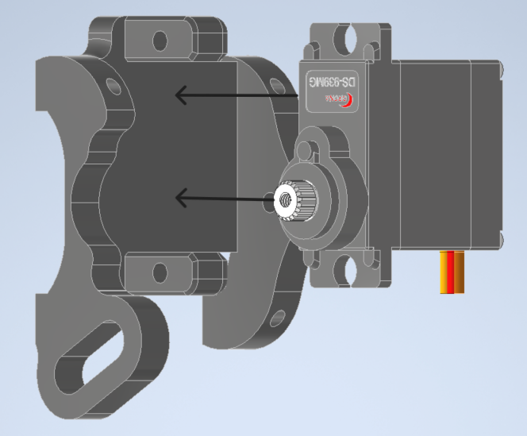
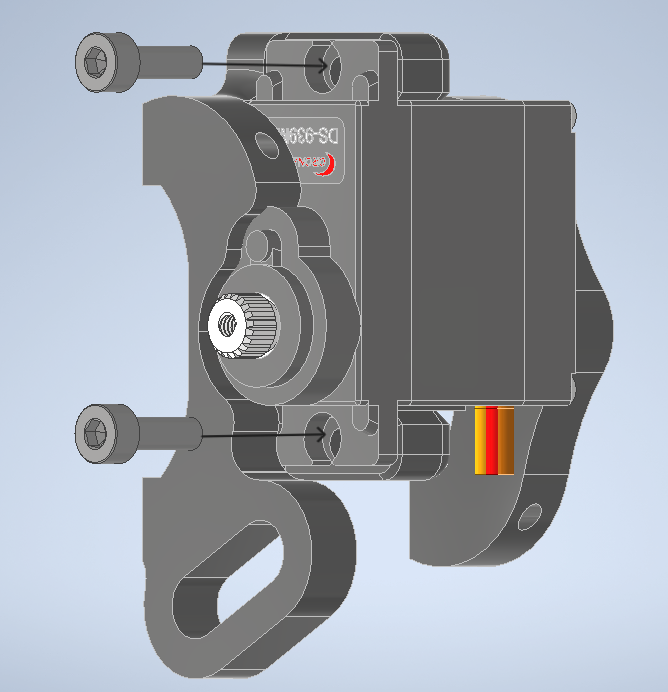
Рис. 1
Шаг 2: Настройка сервопривода и установка боковых стоек
Используется:
- Сервопривод с маунтом, собранный на шаге 1;
- Левая боковая стойка - 1шт;
- Правая боковая стойка - 1шт;
- Винт M2x10 - 1шт;
- Винт M3x10 - 1шт;
- Подшипник или пластиковая проставка под М3 (внешний диаметр до 6 мм) - 1шт.
Установите сервопривод в центральное положение (1500). Вы можете подключить кабель от него к полётному контроллеру и осуществить настройку, как описано в данной статье.
Настройку также можно осуществить с помощью тестеров, как на рисунке 2.
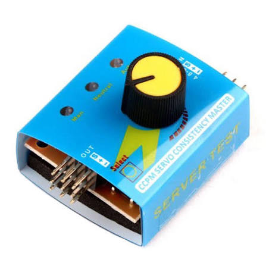
Рис. 2
Задайте значение "1500" или поверните потенциометр на среднее положение (зависит от типа тестера).
В крайнем случае, на сервопривод можно одеть качалку и вручную найти крайние положения, а после, повернуть её примерно на середину.
После настройки присоедините к сервоприводу левую боковую стойку, под углом в 90 градусов, как на рисунке 3, прикрутите винт M2x10, но не перетягивайте его сильно, чтобы избежать заклинивания механизма и последующего выхода из строя.
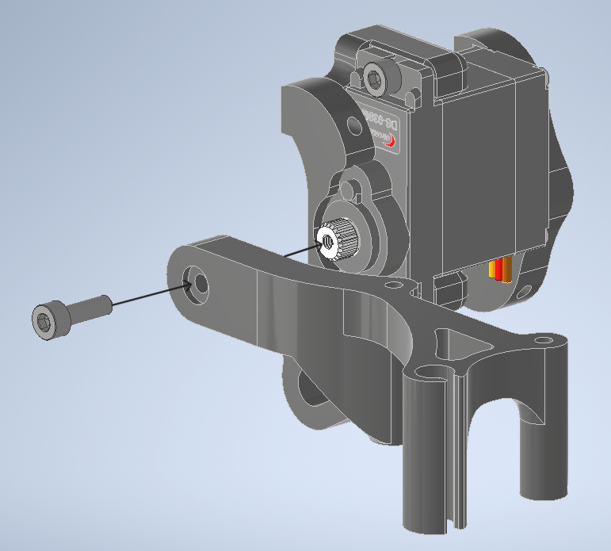
Рис. 3
Важно Не перекручивайте винты и не прижимайте детали слишком плотно, чтобы снизить нагрузку на сервопривод и избежать поломок механизма в дальнейшем!
Вставьте в правую боковую стойку подшипник или пластиковую проставку под М3 с максимальным внешним диаметром до 6 мм. Прикрутите деталь к маунту винтом M3x10 до упора без усилий, чтобы она легко проворачивалась.
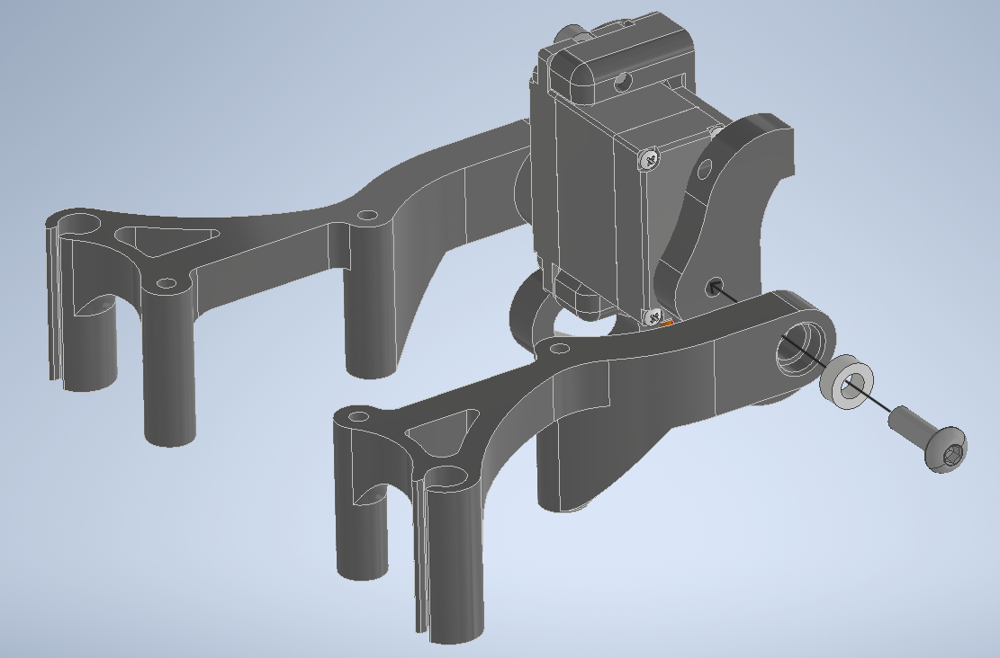
Рис. 4
Шаг 3: Установка камер
Используется:
- Кронштейн, собранный на шаге 2;
- Фронтальная камера - 1шт;
- Вторая камера - 1шт;
- Винт M2.5x4-6 - 8шт (по 4шт на камеру).
Установите фронтальную камеру на маунт спереди, как показано на рисунке 5, используя 4 винта M2.5x4-6
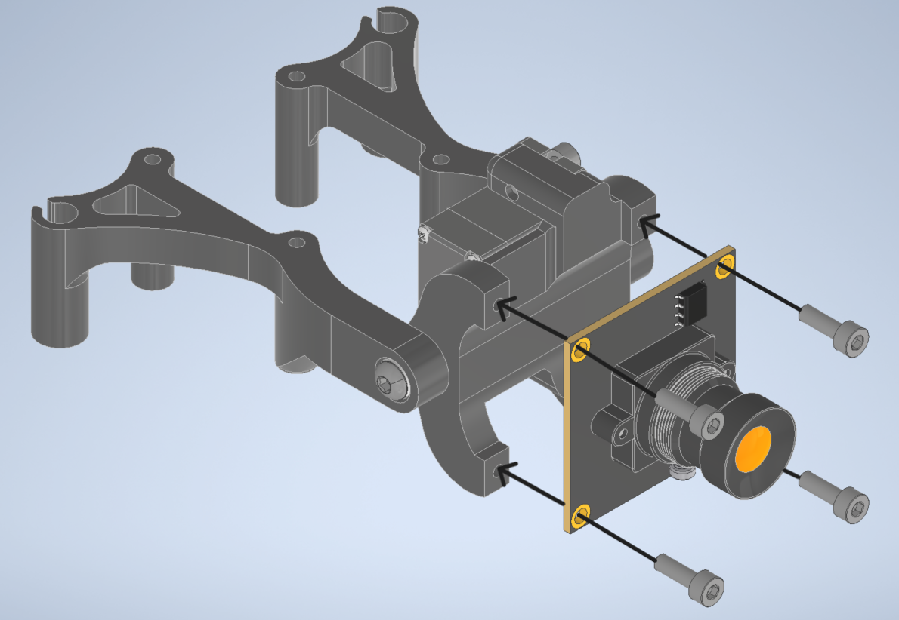
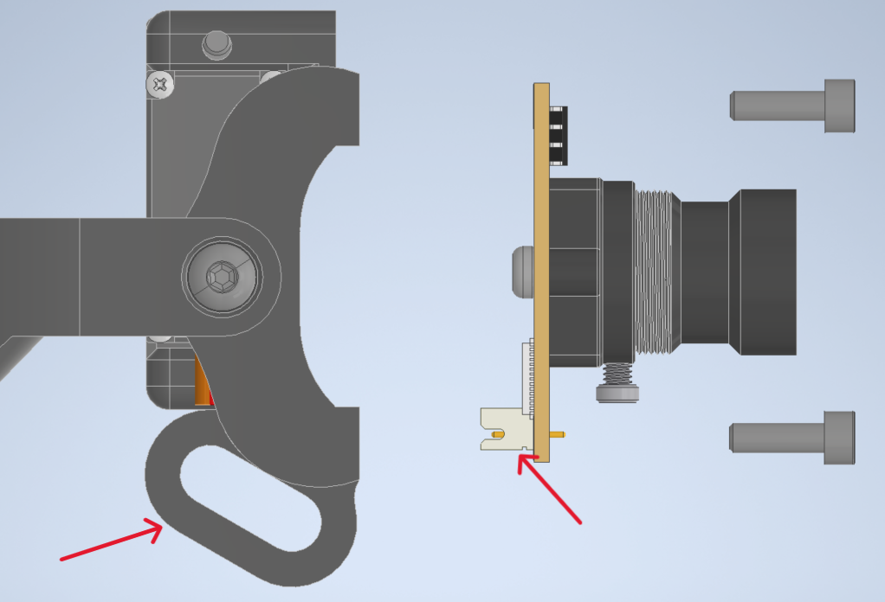
Рис. 5
Подсказка Обратите внимание что разъём для кабеля находится с той же, стороны, что и фиксирующая петля провода! При подключении камеры к одноплатному компьютеру, нужно продеть конец кабеля через неё.
Установите вторую камеру так, как показано на рисунке 6, учитывая расположение разъёма и закрепив её на 4 винта M2.5x4-6.
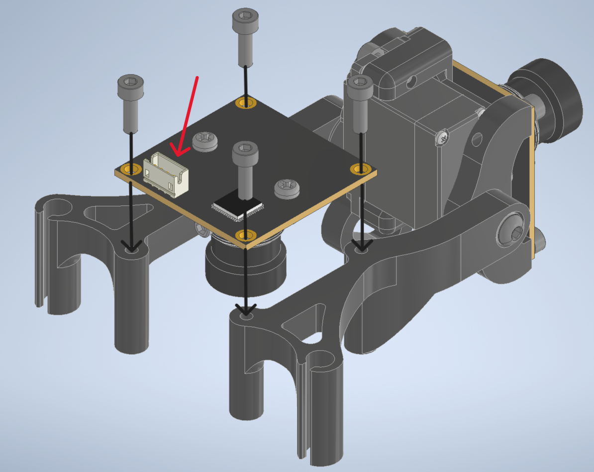
Рис. 6
Этап 2: Установка и подключение
Шаг 1: Установка на маунт
Используется:
- Собранный кронштейн с камерами;
- Маунт камеры - 1шт;
- Винт M2.5x4-6 - 4шт.
Собранный кронштейн установите на маунт камеры, как показано на рисунках 7 и 8, и закрепите на 4 винта M2.5x4-6
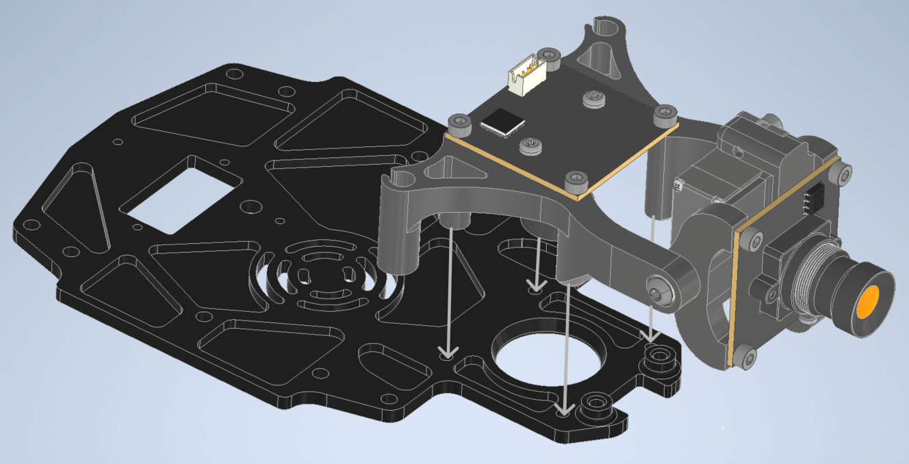
Рис. 7
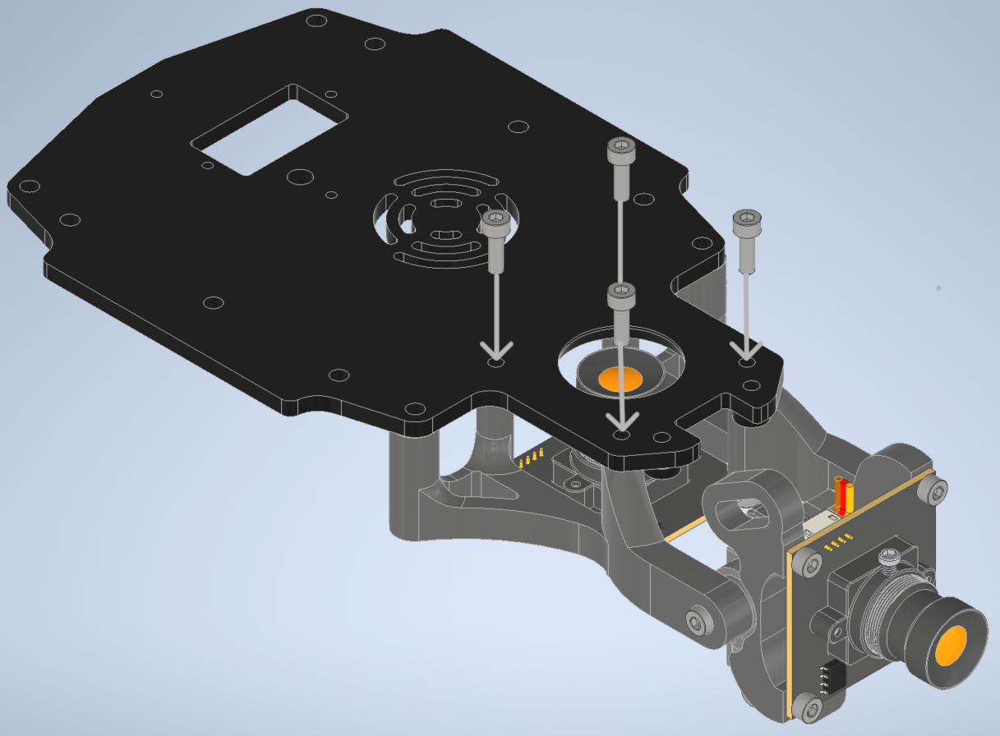
Рис. 8
Шаг 2: Установка на дрон
Используется:
- Конструкция, собранная на шаге 1;
- Передние алюминиевые стойки;
- Винт M3x4-6 - 4шт.
Получившуюся конструкцию оденьте на передние алюминиевые стойки до упора и зафиксируйте с помощью 4 винтов M3x4-6, как показано на рисунках 9 и 10
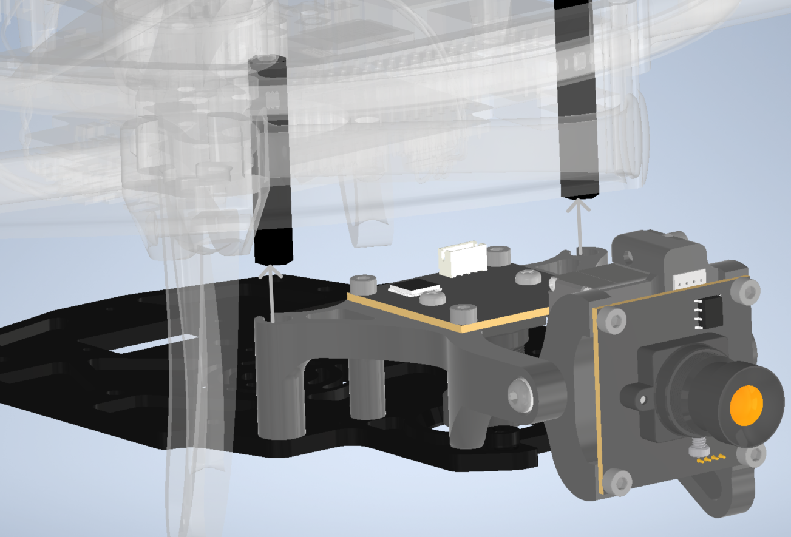
Рис. 9
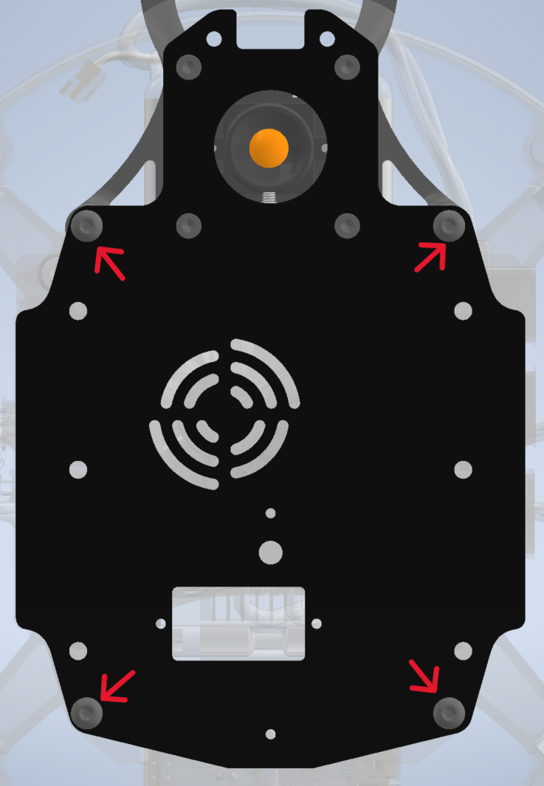
Рис. 10
Шаг 3: Подключение камер
Подключите камеры к Orange через разъёмы USB, как показано на рисунках 11 и 12.
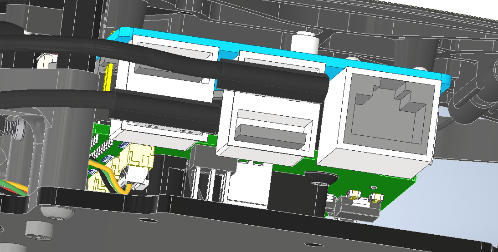
Рис. 11
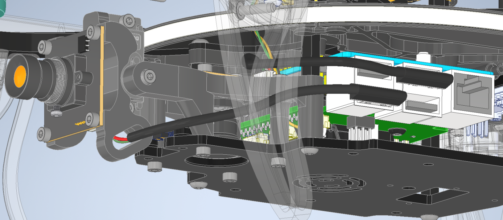
Рис. 12
Важно Если камеры инициализируются в неверном порядке (это можно проверить через WEB-интерфейс дрона во вкладке "Image Topics"), то необходимо поменять кабели местами.
Шаг 4: Подключение сервопривода
Аккуратно проведите кабель от сервопривода к полётному контроллеру так, чтобы он не пересекался с пропеллерами. Подключите провод к гребёнке сзади сигнальным пином вверх (жёлтым проводом). Для подключения можно использовать 2 крайних столбца пинов, это AUX1 и AUX2, соответственно.
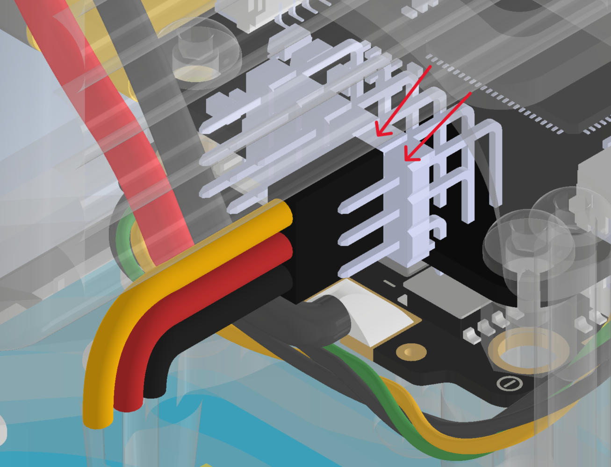
Рис. 13
Допускается подключение сервоприводов к шилду OrangePi. Для этого провод нужно соединить с пинами над разъёмами USB, как показано на рисунке 14.
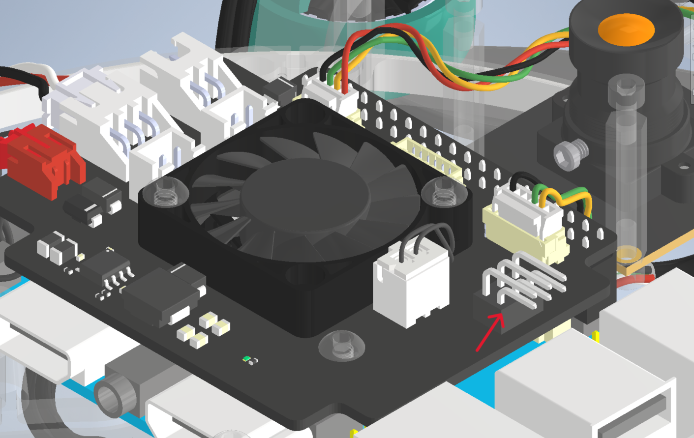
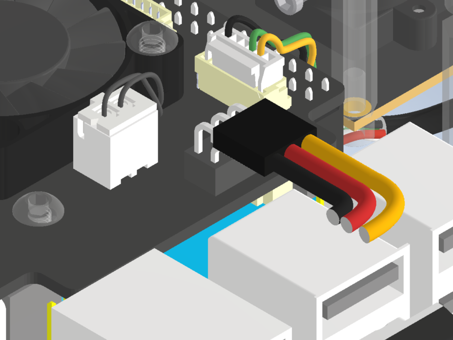
Рис. 14
Подробнее о подключении сервоприводов к OrangePi написано в данной статье.